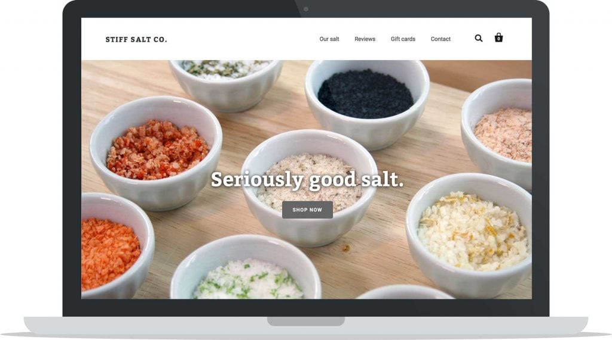
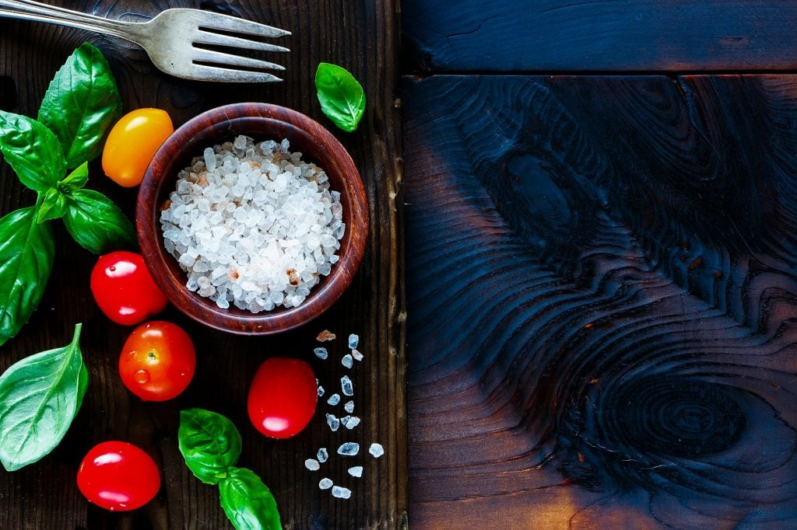
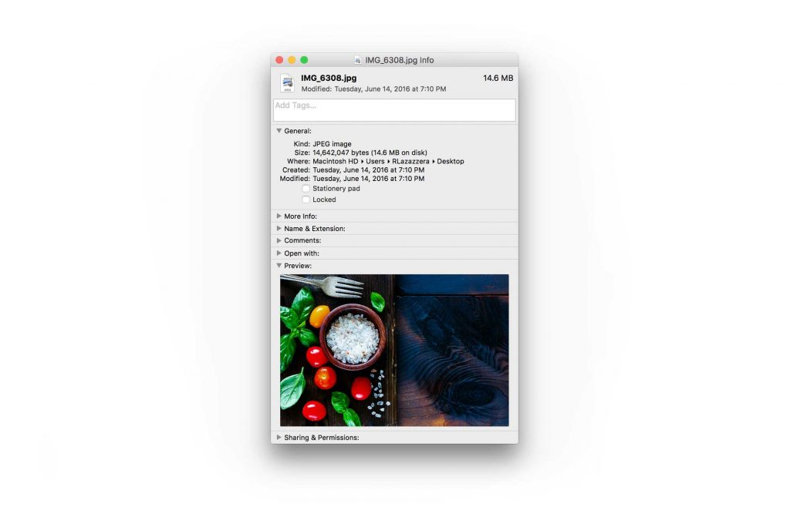
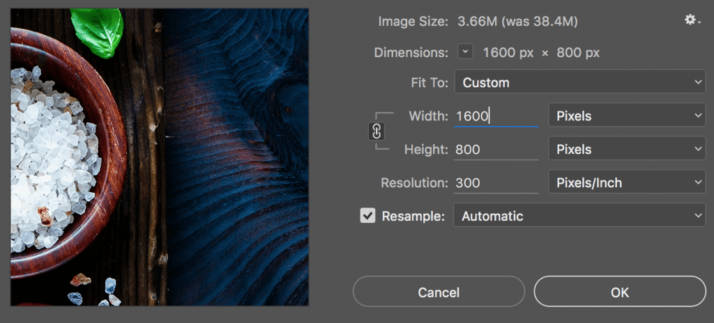
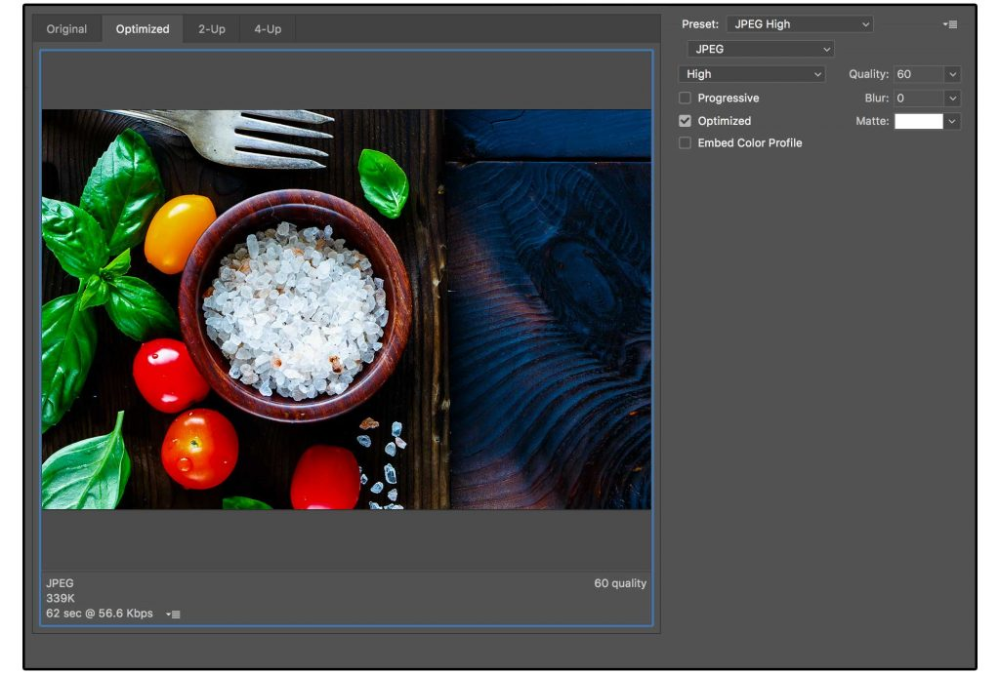

Optimizing Images for Web
In this article, I will talk about how to optimize your website images to ensure they provide the best user experience for visitors
The use of images are vital in a website as it leaves the visual impression on website visitors. That being said, your images need to be high-resolution and crisp. But this comes at a price. Large, high definition images can have hug files sizes and end up with loading very slowly. Hence, we need to find a good balance between image quality and image file size when you save an image for your site, whether it is a homepage background or a cover photo.
Image Types
There are three main image file types: GIF, JPG and PNG. Each file type has its own strengths and weaknesses and it is important to know and keep in mind when using.
-
JPGAlso known as JEPG, is the most popular type on web. It is perfect for photographs or complex images conrtaining lots of colors, shadows, gradients, or complex patterns. This is because JPG has a hug color palette to woek with. -
PNGis usually used for logos because it can handle transparency. This is one of the biggest differentiation points between PNG and JPG. -
GIFis another popular type but is restricted to only 256 colors(in contrast with JPF). It’s use case is narrower than the above two.
Image size
As can be expected, large images take longer to load. When I say large, I’m referring to the file size rather than the dimensions of an image, i.e. the value in KB, MB, etc. Seeing as 47% of users expect a webpage to load in under 2 seconds, and 40% will abandon a page that takes more than 3 seconds to load, it’s important that your images are small enough to ensure a speedy site.
Optimization Scenario
To begin, let’s pretend we are Stiff Salt (actually owned by a friend and Shopify Developer) and we wanted to change the feature image on our online store.

We set up a scene, make our salt look absolutely incredible and we take a photo with a DSLR camera. Great we have our photo. What a beauty!

But… the file size is HUGE! 14.6 MB to be exact. And the dimensions of the photo are 5184 × 3456 pixels. This is completely unusable right now. It’s literally big enough to print a movie-sized poster. At 14.6 MB, this image would take significant time to load on a visitor’s computer. This is no good.

Now, it is necessary that we work on the image and reduce file size. There are usually three things that you can do:
- Reduce Image Size: the dimension of the photograph
- Save Image appropriately to reduce file size: this is the size of the file and how much space it takes on your computer’s hard drive or web server
- Compress Image file: get rid of any additional hidden data taking up space
Reduce Image Size
To keep things simple, we’re going to first reduce the image size. To do this, we’re going to open the image in Adobe Photoshop (you can use whatever image program you feel most comfortable with).
Choose a reasonable target size, for example 1600 x 800 pixels(remember the original was 5184 × 3456 pixels).
In Photoshop, we’re going to select Image > Image Size.

Now, we’ve reduced the size(dimension) of the image to something more appropritate.
Save Image Appropriately for Web
In Photoshop, there’s a specific command called “Save For Web” that optimizes the image file for displaying online. This is important as the regular “Save” command can end up creating file sizes 2-3 times larger than the “Save For Web” command.
In the “Save For Web” box, we need to make a few selections.
- Image Type: The file type will affect the quality and size of the output file
- Image Quality: This is important and can heavily affect the final file size
- Dimensions: We already did this in the first step, so there’s no need to do it again, but if we didn’t do this in the first step, we could just change the dimensions for the image here
Based on what we learned at the beginning of this post, we know that JPEG is the best file type for photographs or any image with lots of colors and complexity. We will select JPEG.

For Image Quality, you have a scale you can select with 5 presets that range from Maximum to Low. Let’s take a look at the final output file size of each of the quality levels (this information is displayed in the bottom corner of the image-saving window):
- Maximum: 1.38 MB
- Very High: 611 KB
- High: 339 KB
- Medium: 152 KB
- Low: 86k
You can see that for every quality level you go down, the image size reduces by nearly half. In general, we’ve found that High is the best setting for most images. At this level, it’s nearly impossible for the human eye to see any degradation in image quality, and the file size is nearly 4x smaller than if we were to just select the maximum.
If the image is an extremely important image with a lot of detail, you may want to select a level higher and save at Very High.
Essentially, saving for the web is a balancing act — you must balance the quality of the graphics and the file size of the media to suit your personal needs.
Rule of thumb, we like our product photos to be a maximum 80-150 KB, and for large homepage hero images to be a maximum of 250-350 KB. Those are good benchmark numbers for you to aim for as well.
Compress Image for Web
If you used Adobe Photoshop, it will have already done a really great job at reducing the image size, however, you can still likely shave off another 5-10% of image size by using a compression app like ImageOptim and/or ShortPixel.
ImageOptim is also the easiest way to quickly reduce image file size if you have used another program to save your images that isn’t as good as Photoshop.
Dropping each of the files from the previous step into ImageOptim, we were able to further reduce the image size by another 5%. Not huge, but again, these were already optimized with Photoshop. Regardless, every KB counts.
Conclusion
To recap, our photo was insanely huge when we started, however, with a few simple steps, we reduced the photo size from 5184 × 3456 to 1600 x 800 so that it’s a perfect fit for our homepage and, at the same time, took it from a computer-crashing 14.4MB, down to a much more reasonable 336KB.
Saving images appropriately for the web is an important step to learn early and implement religiously. Even if you only save 10-20% on each image, over time, as your store and website grow, every little KB can add up to some significant savings that will lead to a much more pleasant experience overall for your visitors, customers, and Google.
Ackownledge: This content is largly adapted from Richard Lazazzera